phantom gallery
commit 6cff9e5 · Linux-6.17.0-1022-azure-x86_64-with-glibc2.39 · python 3.12.3 · numpy 2.5.4. Rendered by CI; nothing here is stored in git (ADR 0008).
Budget ledger (ADR 0009)
charge-noise-spectroscopy-cpmg — Charge-noise spectroscopy of the exchange qubit by CPMG
Coherence of the exchange qubit at 30 percent of the way to the anticrossing after N CPMG pi pulses in a fixed total time of 1 us, against the filter frequency N / 2 tau, on the device's charge-noise spectrum. The spectrum is the noise draw's 1/f law with the amplitude defined over the sensor band (the same amplitude the sensor's noise-psd protocol shows at low frequency) extended to 1 GHz, projected onto the qubit through the lever arms and dJ/dε. Coherence recovers with N because the filter moves to higher frequency where 1/f noise is weaker (ADR 0022).
layers: charge, disorder, spin · step 6 · sign-off: unsigned · sha256 f193a58b076fc661…
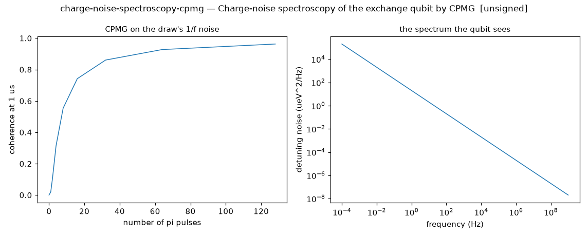
Must show:
charge-noise-spectroscopy-j-vs-ramsey — Ramsey T2* of the exchange qubit against detuning through dJ/dε
The dephasing time of the exchange qubit against detuning, from the quadrature-averaged singlet return (the 1/e time of its envelope, sampled per oscillation period) and analytic as sqrt(2) hbar / (sigma_eps dJ/dε), with the detuning noise sigma_eps of the device's draw. T2* is longest at the symmetric point, where dJ/dε vanishes, and falls toward the anticrossing as 1 / (dJ/dε), the direct check that the same charge-noise draw governs the qubit and the sensor (ADR 0022).
layers: charge, disorder, spin · step 6 · sign-off: unsigned · sha256 8dfbecfe6103daed…
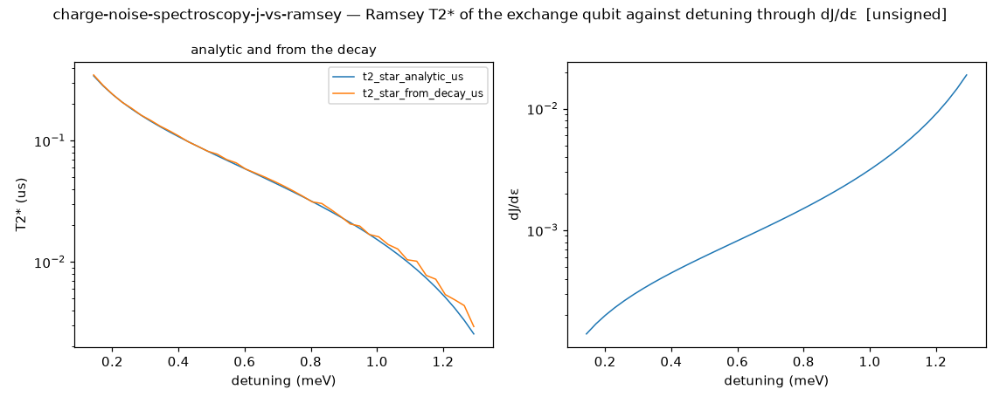
Must show:
compiled-device-roundtrip — Compiled device round trip through serialisation
A device compiled from the textbook layout with seed 2 (scenario draw, noise draw, valley and spin draws, the derived charge model, the WKB barriers and the sensor set-point), serialised to JSON text and reloaded. The coarse stability map drawn from the original and from the reloaded device, and their difference, which is identically zero. The device file is a few kilobytes because the electrostatics basis is recomputed from the layout and the draw rather than stored (ADR 0023).
layers: layout, electrostatics, disorder, valley, charge, readout, spin, device, compile · step 7 · sign-off: unsigned · sha256 a4b6024df751ec91…
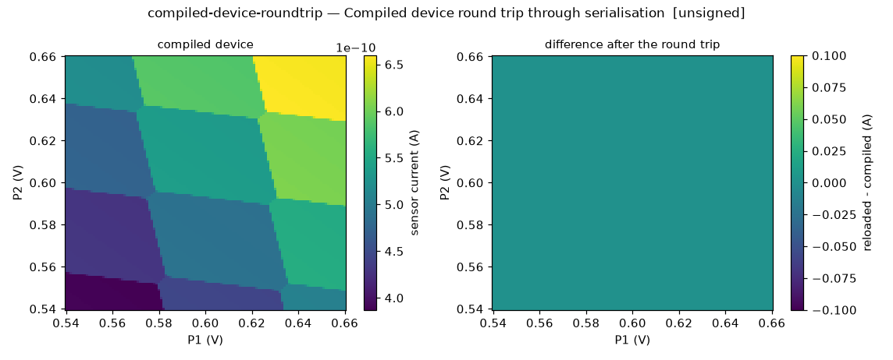
Must show:
coulomb-oscillations-single-dot — Coulomb oscillations of a single dot
Current through a single dot (the SET sensor) against its plunger at small bias, plungers of the double dot at 0 V. Periodic thermally broadened peaks spaced by the addition energy over the lever arm. Noise-free.
layers: readout, charge · step 1 · sign-off: unsigned · sha256 bc52e74a2a09dde2…
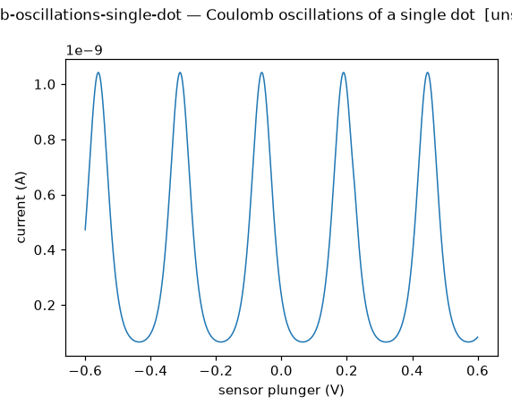
Must show:
crosstalk-lines — Charge-transition lines against gate pairs
The layout-derived double dot's sensor signal against four gate pairs, noise-free, plus or minus 60 mV around the operating point. In each plane a dot's transition lines have slope equal to minus the ratio of that dot's lever arms to the two gates, so the four maps together read out the cross-capacitance matrix, which is returned alongside as the lever-arm matrix. The sensor gate is set on its flank first.
layers: layout, electrostatics, charge, readout · step 2 · sign-off: unsigned · sha256 02959f47d5ca5cef…
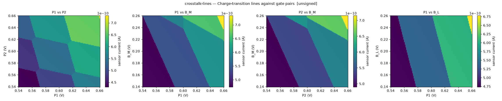
Must show:
diamonds-single-dot — Coulomb diamonds of a single dot
Current through a single dot (the SET sensor) against its plunger and the source-drain bias. Diamond edges have slope plus or minus twice the lever arm; the apex sits at the charging energy. Noise-free.
layers: readout, charge · step 1 · sign-off: unsigned · sha256 03b5146bc2f7e677…

Must show:
drift-repeated-cuts — One plunger cut repeated every minute for two hours
A 200-point P1 cut across a dot-1 charge transition, 1 ms per point, repeated every 60 s for 120 repeats on a device with drawn noise; the noise clock runs between cuts. The map of current against (P1, elapsed time) shows the transition drifting with the slowest fluctuators of the 1/f ensemble (band down to 0.1 mHz) and jumping when a switcher flips; the second panel is the extracted transition position against time.
layers: disorder, readout · step 4 · sign-off: unsigned · sha256 d818f3627a14de16…

Must show:
elzerman-trace — Elzerman single-shot readout traces and the read window
Charge traces after pulsing the dot level to the read position, where an upper-spin electron tunnels out at 20 kHz and a lower-spin electron tunnels back in at 10 kHz, for eight shots prepared in the upper state (offset for display) with spin relaxation at 10 ms competing; and the probability that the dot is empty against time, sampled over 2000 shots beside the analytic curve, whose peak and width set the read window a consumer thresholds. Rates are parameters here; the layout's lead rates (readout.rates) supply them in the compiled device (ADR 0022).
layers: readout, spin · step 6 · sign-off: unsigned · sha256 fbd5f654992f220f…
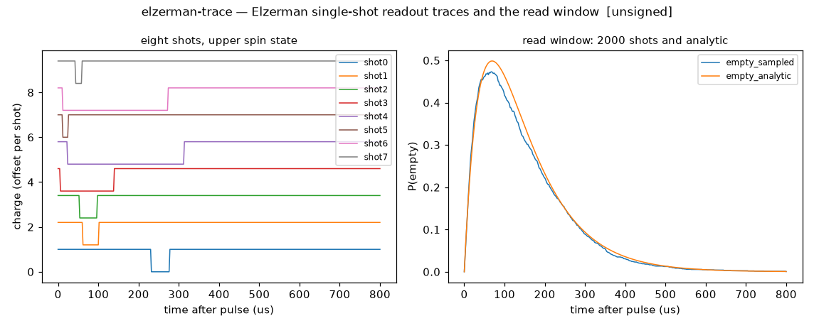
Must show:
esr-line — Spin resonance lines of the two dots against field and drive frequency
Spin-flip probability after a pi burst at a Rabi frequency of 5 MHz against the external field and the drive frequency measured from the g = 2 line (2 mu_B B / h, about 28 GHz/T, recorded as g2_line_ghz). Each dot gives one line whose offset grows linearly with field as (g - 2) mu_B B / h, so the two lines fan out by the g-factor difference of the spin draw; their width is the Rabi power broadening (ADR 0021).
layers: spin · step 6 · sign-off: unsigned · sha256 6b502a8e40358104…
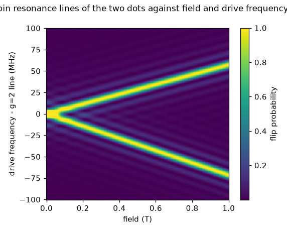
Must show:
exchange-fingerprint — Exchange fingerprint, singlet return against detuning and evolution time
A singlet separated into (1,1) evolves under J(ε) for a time τ and is projected back on the singlet, with the detuning swept from the (2,0) side through the symmetric point to the (0,2) side. The oscillation frequency J/h is lowest at the symmetric point and rises toward either anticrossing, and the visibility decays with the quasi-static detuning noise of the device's charge-noise draw (Gauss-Hermite average over a Gaussian detuning offset whose rms is the gate-referred 1/f amplitude projected through the lever arms), fastest where dJ/dε is largest. The model evaluations per point are the Hubbard evaluations of each detuning column at the 31 quadrature nodes (ADR 0021).
layers: charge, disorder, spin · step 6 · sign-off: unsigned · sha256 a565a04e76ed92a5…
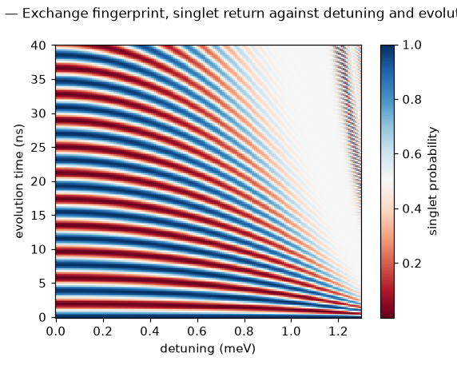
Must show:
exchange-gate-fidelity — SWAP exchange-gate fidelity against operating detuning for two noise draws
Average fidelity of a SWAP gate, J switched on for pi hbar / J at the operating detuning, from the Lindblad propagator with a Markovian T_phi of 100 us and T1 of 1 s, averaged by quadrature over the quasi-static detuning noise of two devices' noise draws, beside the noiseless device. The infidelity has its minimum at the symmetric point, where dJ/dε vanishes and only the Markovian dephasing over the gate time remains, and grows toward the anticrossing with (dJ/dε sigma_eps)²; the two draws differ by their 1/f amplitude. The gate time is recorded alongside (ADR 0022).
layers: charge, disorder, spin · step 6 · sign-off: unsigned · sha256 b01a47f7443471ba…
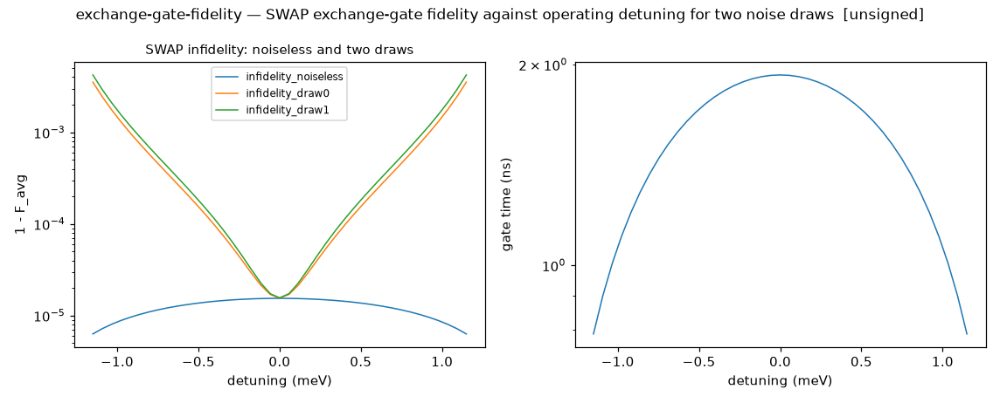
Must show:
exchange-house-cells — Exchange house cells, singlet return against both plungers with J held high
Singlet return after a fixed evolution time of 2 ns against the two plungers around the evolve point, with the interdot barrier opened to +80 mV so that J is in the GHz range. Inside the (1,1) cell the return probability is cos(J τ/ħ) averaged over the detuning noise of the device's draw, so bands of constant return follow contours of constant J and are cut off by the charge-transition lines of the honeycomb; in (0,2) and (2,0) a singlet returns as a singlet (1.0) and other charge states carry no spin information (0.5). The second panel is J itself inside (1,1) (ADR 0021).
layers: charge, disorder, spin · step 6 · sign-off: unsigned · sha256 5edb58a608f56c62…
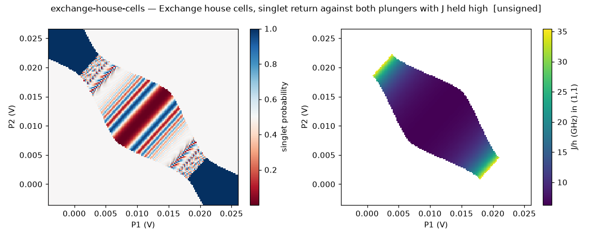
Must show:
exchange-vs-barrier — Exchange J against the interdot barrier at the symmetric point
J at the centre of the (1,1) cell against the interdot barrier voltage. The tunnel coupling falls exponentially as the barrier closes and J goes as its square, so J follows exp(2 V_B / v_scale), the overlaid law, until the coupling becomes comparable to the charging energy near the open end (ADR 0021).
layers: charge, spin · step 6 · sign-off: unsigned · sha256 c4a367b073a524b7…
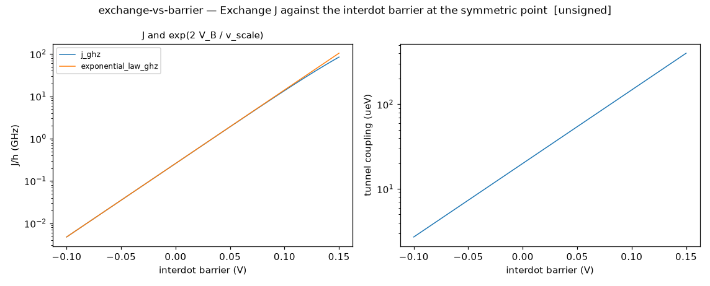
Must show:
exchange-vs-detuning — Exchange J against detuning from the Hubbard model at three barrier settings
The exchange energy J, the singlet-triplet splitting of the (1,1) pair, against detuning between the (2,0) and (0,2) anticrossings, read from the two-electron sector of the Hubbard model at three interdot barrier voltages. The second-order formula 2t²/Δ_R + 2t²/Δ_L overlays the middle curve, and dJ/dε, which turns charge noise into exchange dephasing, is plotted alongside. J is smallest and flat at the symmetric point (the sweet spot) and rises toward either anticrossing (ADR 0021).
layers: charge, spin · step 6 · sign-off: unsigned · sha256 d3d987ff578a8d29…
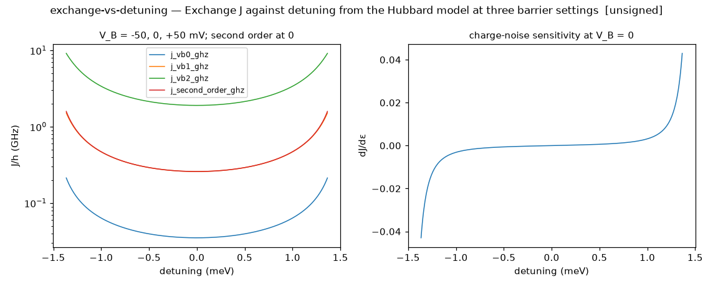
Must show:
fault-signatures-stability — Wiring-fault signatures in the coarse stability map
The layout-derived coarse map with the clean wiring and with three named faults, programmed voltages on the axes. Sensor-coupling asymmetry (dot 2 coupled four times more weakly) leaves one dot's lines faint. Shorting P2 to the sensor gate SG makes the sensor gate follow P2, so the sensor is dragged off its flank as P2 sweeps and the whole map is modulated by the sensor's own Coulomb peak. (Shorting a plunger to a neighbouring barrier opens that barrier and dissolves the dot into the reservoir or merges the two dots, which the two-dot model cannot show.) An open B_L floats at 0 V instead of its set point, raising the left barrier so dot 1 holds fewer electrons and its lines shift. Placeholder faults (calibration none), default noise draw.
layers: layout, electrostatics, disorder, charge, readout · step 3 · sign-off: unsigned · sha256 dd1e26fbcc47610d…
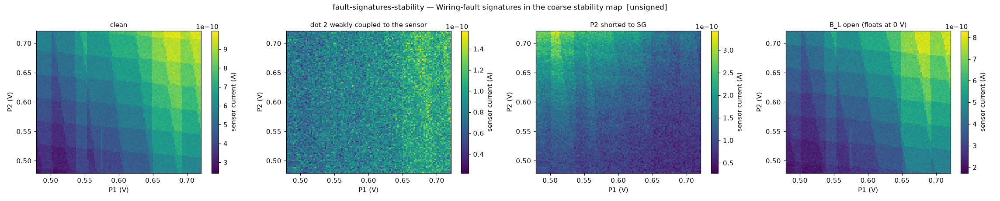
Must show:
gate-hysteresis-trapping — Turn-on swept up and down with charge trapping
The single-gate turn-on of B_L (rest of the channel open) swept upward and then downward, with traps in the dielectric that charge above 0.6 V and release below 0 V. The trapped charge screens the gate, so the downward trace turns off at a shifted voltage and the two traces enclose a loop, unlike the coinciding traces of gate-hysteresis. The second panel shows the trapped fraction along each direction. Placeholder trap parameters (calibration none).
layers: layout, electrostatics, disorder, readout · step 3 · sign-off: unsigned · sha256 165604fce5da00d8…

Must show:
gate-hysteresis — One gate swept up and back down
The turn-on of B_L swept upward and then downward over the same range, from the layout. With no charge trapping the two traces coincide exactly; this is the clean baseline. Step 3 adds the trapping that opens a loop between them.
layers: layout, electrostatics, readout · step 2 · sign-off: unsigned · sha256 54b728d897d7245e…
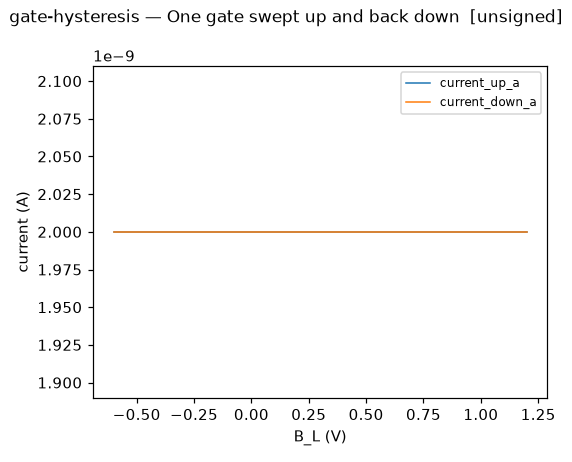
Must show:
gate-leakage-iv — Leakage current of every gate
Leakage through the dielectric stack for each gate of the textbook layout against its own voltage, all others grounded. Antisymmetric, proportional to the gate area (so the two plungers leak more than the three narrower barriers), and exponential in the field across the stack, so it is negligible inside the safe window and rises steeply beyond it. Phenomenological (calibration none); an open gate would show no current anywhere, which Step 3 adds as a fault.
layers: layout, readout · step 2 · sign-off: unsigned · sha256 a98666dd0443e4ea…
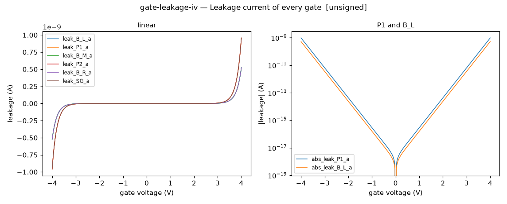
Must show:
gate-leakage-pair — Leakage between two neighbouring gates
P1 swept with every other gate grounded when a 1 gigaohm leak connects P1 to B_M. P1 carries a linear leakage current on top of its dielectric leakage, B_M carries the same current with the opposite sign although its own voltage is zero, and the healthy P1 curve is shown for comparison. Placeholder resistance (calibration none).
layers: layout, disorder, readout · step 3 · sign-off: unsigned · sha256 3c423fd31142e2a2…

Must show:
lead-rate-time-trace — Charge relaxation after a plunger step, for three lead barriers
P1 is stepped at t = 0 by half a transition period so dot 1 must take up an electron from the left reservoir, for three settings of the left barrier B_L. The mean charge on dot 1 relaxes exponentially toward its new equilibrium at the lead rate, which the layout predicts through the WKB barrier (height and width read off the landscape); the second panel shows the remaining deficit on a logarithmic scale, a straight line whose slope is the lead rate. The time axis of each trace spans six relaxation times, so the rates are read from the recorded arrays. Noise-free.
layers: layout, electrostatics, charge, readout · step 4 · sign-off: unsigned · sha256 ffc2ac15219ed093…
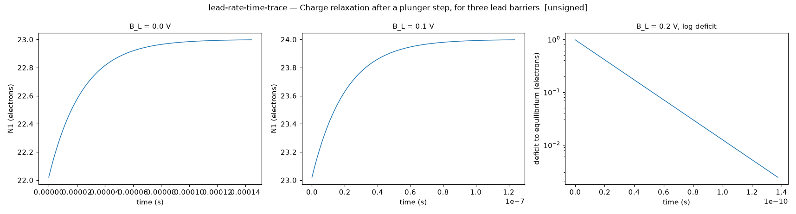
Must show:
magnetospectroscopy-transition — Second-electron transition position against in-plane field for three valley draws
The gate-voltage position of the one-to-two electron transition against magnetic field for three dots drawn from the Si/SiGe valley distribution. Each trace rises as half the Zeeman energy while the second electron enters the lower valley as a singlet and falls once the Zeeman energy exceeds the valley splitting and the triplet with one electron in the upper valley is lower, so the kink marks each dot's valley splitting (ADR 0020).
layers: valley · step 5 · sign-off: unsigned · sha256 013453bbb5f17163…
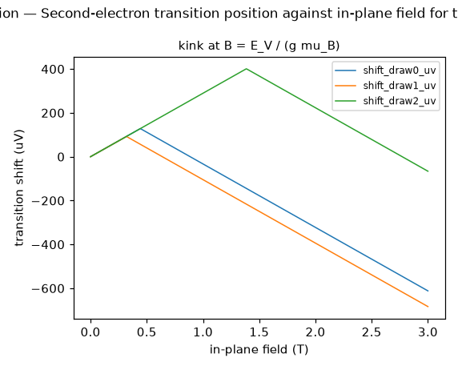
Must show:
noise-psd — Power spectral density of the sensor trace
Welch estimate (4096-sample Hann segments) of the sensor current noise at the flank point, from the same 30 s trace and seed as noise-time-trace. The 1/f slope from the fluctuator ensemble, Lorentzian shoulders from the dominant trap, and the white floor.
layers: readout · step 1 · sign-off: unsigned · sha256 e27e6c1296dccc81…

Must show:
noise-time-trace — Sensor time trace at a fixed point
Sensor current at a point on the steep flank of a sensor peak, sampled every millisecond for 30 s with the default noise draw. White noise, telegraph switching of the trap near the sensor, and slow 1/f drift of the working point.
layers: readout · step 1 · sign-off: unsigned · sha256 84d46b4e41efdf0a…

Must show:
ohmic-iv — Source-drain current with the channel open
Current against source-drain bias with every gate accumulated: linear, with one series resistance for the contacts and the electron-gas squares. Phenomenological (calibration none); a bad contact (Step 3) shows as a larger or non-linear resistance.
layers: readout · step 2 · sign-off: unsigned · sha256 81042b7d67ece5d2…

Must show:
optimum-sensor-flank — Sensor peak of the compiled device and the optimum's flank
The compiled device's sensor current and the magnitude of its slope against the sensor gate over about one Coulomb-peak period around the compiled set-point, with the point the optimum chooses, the steepest flank found by a coarse scan and a fine scan, marked by a spike in the marker trace. The compiled set-point itself sits 0.9 peak widths from the peak centre (ADR 0023).
layers: readout, device, optimum, compile · step 7 · sign-off: unsigned · sha256 1d8c69bb812f2dec…
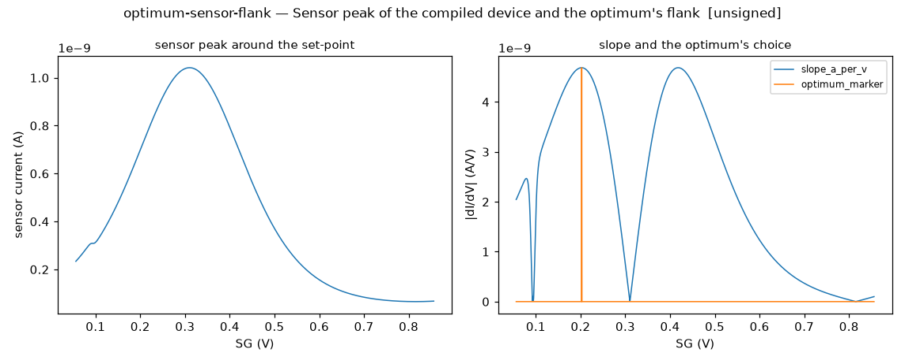
Must show:
pinch-off-barrier — Barrier pinch-off
Current through a channel as one barrier gate closes it. Exponential tail below pinch-off with the barrier's own voltage scale, saturation above. Phenomenological in Step 1 (calibration none).
layers: readout, charge · step 1 · sign-off: unsigned · sha256 a5b596c4574ccc0c…
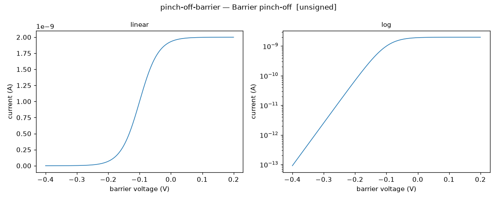
Must show:
pinch-off-crosstalk — Pinch-off of one barrier against a neighbouring gate
Current through the channel under the left barrier B_L against B_L and the neighbouring plunger P1, from the layout's potential. The channel is open where the electron energy under the barrier lies below a threshold, so the pinch-off edge is a straight line whose slope is minus the ratio of the two gates' lever arms at the barrier (the cross-capacitance ratio). The step shape is phenomenological (calibration none); the slope is derived.
layers: layout, electrostatics, readout · step 2 · sign-off: unsigned · sha256 f0ee0bf1bd50f32d…
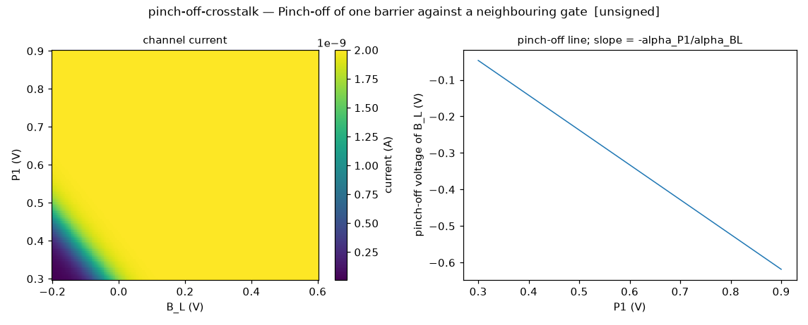
Must show:
plunger-vs-barrier-map — Plunger against the lead barrier of dot 1
Sensor current against P1 (fast axis) and the barrier B_L between dot 1 and its reservoir (slow axis), on the textbook layout. For every barrier setting the lead rate is the WKB rate of the landscape (ADR 0017) and the charge follows the master equation along the row at 1 ms per point, carried across the flyback. The dot-1 transition lines tilt with the barrier's lever arm; as the barrier closes the rate falls below the inverse dwell, the lines fade, latch along the row and carry across rows, while the equilibrium panel keeps clean lines. The fourth panel is the derived lead rate per row. Noise-free. Re-rendered on the master equation in Step 4 (the Step 1 placeholder is retired).
layers: layout, electrostatics, charge, readout · step 1 · sign-off: unsigned · sha256 96eead6d0033429c…

Must show:
potential-cut-along-channel — Potential energy along the channel for several middle-barrier voltages
The electron potential energy along the line through both dots (y = 0) of the textbook layout, for three voltages on the middle barrier B_M. The two wells and the barrier between them; the barrier top falls as B_M rises; the outer barriers B_L and B_R at the ends.
layers: layout, electrostatics · step 2 · sign-off: unsigned · sha256 357673d5a930c031…
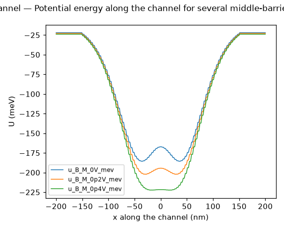
Must show:
potential-map-disorder — Potential landscape of the clean layout and three disorder draws
The electron energy in the electron plane for the textbook Si/SiGe layout at the operating point, clean and for three seeded disorder draws at severity 1. Each draw adds random interface charges (local dips for positive charges, bumps for negative) and shifts and resizes the gate layer (outlines drawn). Placeholder density from the catalog draft (calibration none).
layers: layout, electrostatics, disorder · step 3 · sign-off: unsigned · sha256 4542decf767ba62e…

Must show:
potential-map-layout — Electron potential energy under the gates of a layout
The electron potential energy in the plane of the two-dimensional electron gas, from the closed-form solid-angle potential of every gate at the operating point, with the gate outlines drawn over it. The textbook two-dot layout, Si/SiGe stack. Two wells under the plungers with the middle barrier between them, the sensor well under SG at positive y, and the channel edges where the barriers pinch.
layers: layout, electrostatics · step 2 · sign-off: unsigned · sha256 64f65797769a2ffc…
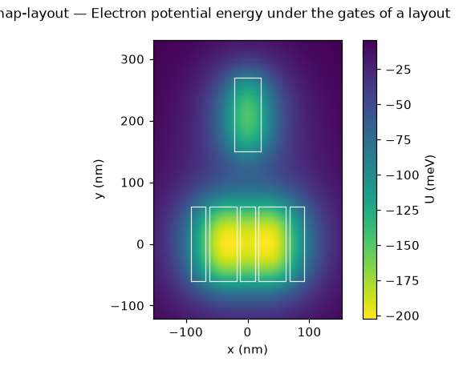
Must show:
psb-bias-triangles — Bias triangles at the (1,1)/(0,2) vertex with Pauli spin blockade
Sequential-tunnelling current against both plungers around the (1,1)/(0,2) vertex at 0.5 mV bias. Forward bias in a 0.1 T field, where an electron loaded next to the one in dot 1 forms a triplet three times in four and cannot relax into the (0,2) singlet, so the base of the triangles up to the valley splitting of dot 2 (one valley draw) is suppressed and current returns beyond it through the valley-excited (0,2) triplet. Forward bias at zero field, where hyperfine and spin-orbit mixing lift the blockade. Reverse bias, where the cycle starts from the (0,2) singlet and nothing is blocked. The rates are placeholders (ADR 0022).
layers: charge, valley, spin · step 6 · sign-off: unsigned · sha256 d01a81f80c65745d…
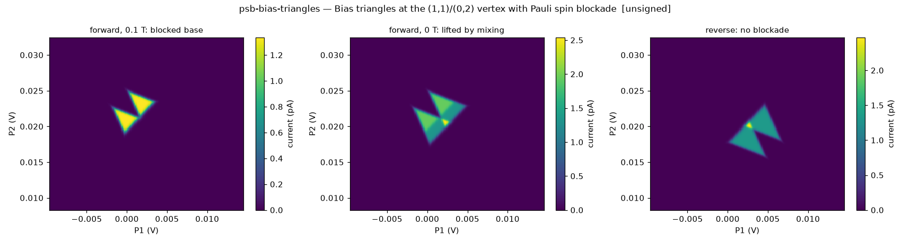
Must show:
psb-readout-window — Pauli spin blockade readout window for two valley draws
Mean (0,2) occupation against detuning for a pair prepared as a singlet and as a triplet, for two valley-splitting draws of the receiving dot. The singlet tunnels into (0,2) at the anticrossing, broadened by the tunnel coupling of 20 ueV and the temperature; the triplet is blocked until the detuning exceeds the valley splitting, where the (0,2) triplet with one electron in the upper valley becomes available. The contrast between the two curves is the readout window, and a small valley draw leaves almost none (ADR 0021).
layers: valley, spin · step 6 · sign-off: unsigned · sha256 924164ce0fdf9437…
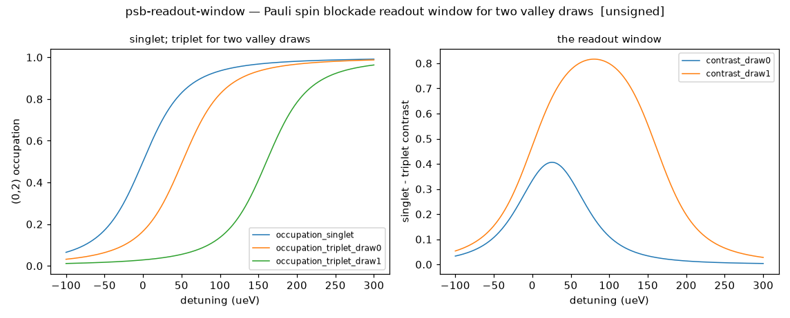
Must show:
pulsed-gate-spectroscopy — Pulsed-gate spectroscopy of the valley-excited state
Time-averaged occupation of the second electron against plunger voltage and the amplitude of a square pulse on the plunger, for one dot drawn from the Si/SiGe valley distribution. The transition line splits into two lines one pulse amplitude apart; loading through the valley-excited state adds a weaker line displaced from the pulsed line by the valley splitting over the lever arm, so the line spacing reads the splitting. An idealised picture with fixed weights (ADR 0020).
layers: valley · step 5 · sign-off: unsigned · sha256 f1f695077e16b70c…
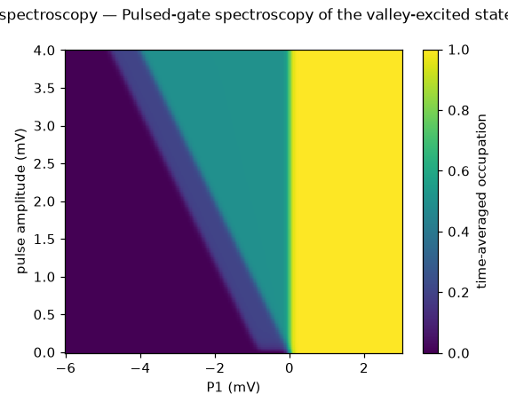
Must show:
rabi-chevron — Rabi chevron of one spin from the Lindblad propagator
Spin-flip probability of dot 1 against the drive detuning from resonance and the burst time, propagated with the Lindblad equation in the rotating frame at a Rabi frequency of 10 MHz with the Markovian T1 and T_phi of the parameters. On resonance the spin flips fully every 50 ns; off resonance the oscillation speeds up and loses amplitude, the chevron (ADR 0021).
layers: spin · step 6 · sign-off: unsigned · sha256 2aeb7f1c73b0bc62…
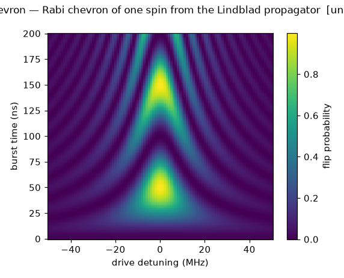
Must show:
ramsey-fringes — Ramsey fringes of each dot with the device's quasi-static noise
Probability of the lower spin state after two pi/2 pulses separated by a wait at a drive detuning of 2 MHz, for both dots at 0.5 T. The fringes oscillate at the detuning. Their Gaussian envelope comes from the quasi-static noise, the hyperfine field (1 neV rms, natural-silicon placeholder) and the g-factor noise through dg/dV driven by the device's charge-noise draw, with T2* = sqrt(2) hbar / sigma_E; the exponential part is the Markovian dephasing. The T2* of each dot is recorded with the arrays (ADR 0021).
layers: disorder, spin · step 6 · sign-off: unsigned · sha256 ad6c5fbdb25078fa…
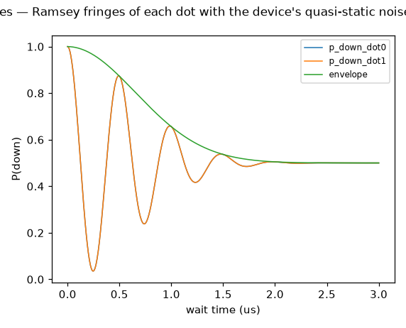
Must show:
rf-resonance — Reflectometry tank resonance for several sensor resistances
Reflected amplitude and phase against carrier frequency for a lumped tank (820 nH, 0.5 pF, 50 ohm line) loaded by the sensor at four resistances. The resonance near 250 MHz, the dip to zero at the matched resistance of about 33 kiloohm, and the phase flipping by half a turn as the sensor resistance crosses the match. Cables and amplifier are not modelled (ADR 0018).
layers: readout · step 4 · sign-off: unsigned · sha256 82ff910406143dbf…

Must show:
rf-sensor-flank — Sensor Coulomb peak read by reflectometry
The sensor plunger swept across one Coulomb peak with the DC current, the small-bias resistance it implies, and the reflected amplitude and phase at the tank's resonance. The RF flank mirrors the DC peak and is steepest where the sensor resistance crosses the matching value of the tank. Noise-free.
layers: readout · step 4 · sign-off: unsigned · sha256 a78bbfaa2a7cd2f9…
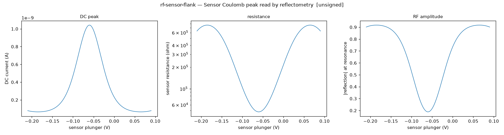
Must show:
sensor-coulomb-peak — One sensor Coulomb peak and its flank
Sensor current against the sensor plunger around one peak, and the slope of that curve. The steep flank is where the sensor is operated; its slope is the sensitivity. Noise-free.
layers: readout · step 1 · sign-off: unsigned · sha256 8b9038343c48b859…

Must show:
single-shot-histogram — Single-shot readout histogram at the sensor flank
Two thousand consecutive shots of 1 ms at a readout point on the sensor flank, the double dot in one of two charge states differing by one electron on dot 1, chosen at random per shot. The histogram of integrated currents is bimodal; its separation is one electron's shift of the sensor and its widths come from white readout noise over 1 ms plus the 1/f and telegraph noise that move both peaks between shots. The second panel shows the shot sequence in time. Placeholder noise (calibration none).
layers: charge, readout · step 4 · sign-off: unsigned · sha256 7812574dd5b40952…

Must show:
snr-vs-integration-time — Readout signal-to-noise and fidelity against integration time
The two-state discrimination at the sensor flank for integration times from 10 microseconds to 30 ms, 400 shots each. The signal-to-noise ratio grows as the square root of the integration time while white readout noise dominates (the dotted law is the square-root extrapolation from the shortest time), then saturates and falls once shots are long enough for 1/f drift and telegraph switching to move the two distributions. The second panel is the single-shot fidelity at the midpoint threshold. Placeholder noise (calibration none).
layers: charge, readout · step 4 · sign-off: unsigned · sha256 6f100f512bb2de2e…

Must show:
spin-funnel — Spin funnel, singlet probability against detuning and field
Singlet probability after a singlet is separated into (1,1) and left for a jittered wait, against detuning and in-plane field. Where J(ε) equals the mean Zeeman energy the singlet crosses the T- triplet and a 50 neV mixing term (hyperfine and spin-orbit, placeholder) transfers half the population, tracing out J(ε) as a funnel that widens toward the anticrossing; the Zeeman difference of the g draw also mixes S with T0 wherever it is comparable to J, which costs singlet probability at the lowest J (ADR 0022).
layers: charge, spin · step 6 · sign-off: unsigned · sha256 39f7b40dd71be8bf…
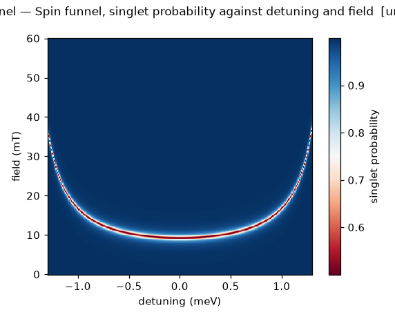
Must show:
stability-coarse-2dot-disorder — Coarse charge-stability map, clean and for three disorder draws
The layout-derived coarse stability map for the clean textbook Si/SiGe layout and for three seeded disorder draws at severity 1, each re-derived from its own perturbed landscape (dot positions, lever arms, capacitances, sensor coupling) with its sensor set on its flank. Lines tilt and shift and the honeycomb period changes between draws; an unintentional minimum would appear as an extra family of lines. Default noise draw, 1 ms per point.
layers: layout, electrostatics, disorder, charge, readout · step 3 · sign-off: unsigned · sha256 285f8a9c11670bb5…
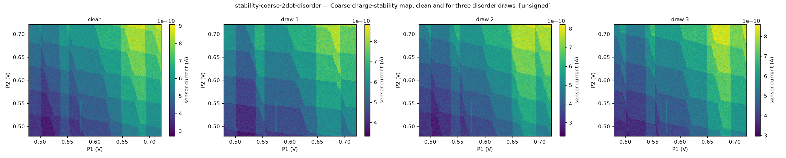
Must show:
stability-coarse-2dot-layout — Coarse charge-stability map derived from a layout
The same measurement as stability-coarse-2dot, but nothing is typed except the layout, the operating point and the sensor's per-electron coupling. Lever arms, dot capacitances and the sensor's coupling to every gate come from the closed-form potential (ADR 0013). The sensor gate is first set so the sensor sits on the flank of its nearest Coulomb peak, as a tune-up does; the voltage used is recorded in the arrays. Plungers swept plus or minus 0.15 V around the operating point, 1 ms per point, default noise draw. The honeycomb period equals e over the derived gate capacitance; the line slopes are the derived cross lever arms.
layers: layout, electrostatics, charge, readout · step 2 · sign-off: unsigned · sha256 eb00139c748ca5be…
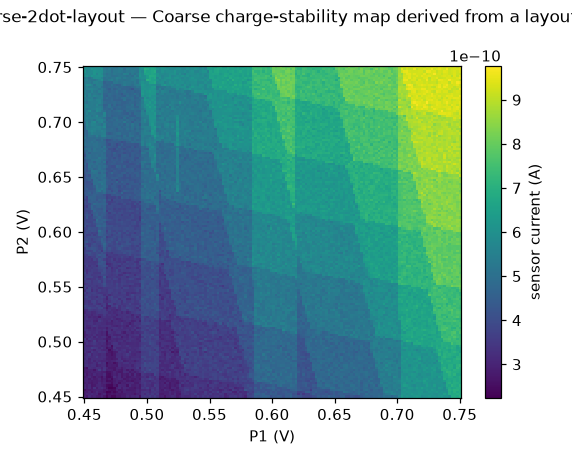
Must show:
stability-coarse-2dot — Coarse charge-stability map of the double dot
Sensor current against both plungers over a wide range, raster-scanned at 1 ms per point with the default noise draw. The honeycomb of charge transitions, the lines of both dots with different slopes, the empty corner where transitions stop, and 1/f drift and sensor switching visible as streaks.
layers: charge, readout · step 1 · sign-off: unsigned · sha256 36e4b7a9e1edd790…

Must show:
stability-direction — Coarse stability map scanned forward and backward at a lagging dwell
The same layout-derived map as stability-vs-sweep-rate at a dwell near one over the lead rate, with the fast axis (P2) scanned upward in one panel and downward in the other, and the difference of the dot-1 charge between the two. The lagging transitions sit on opposite sides of their equilibrium position, the hysteresis of a latched stability diagram. Noise-free.
layers: layout, electrostatics, charge, readout · step 4 · sign-off: unsigned · sha256 c5ec503114048bba…
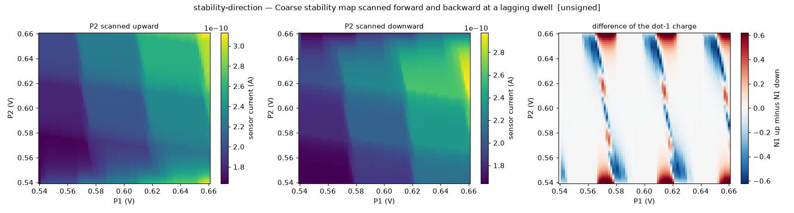
Must show:
stability-fine-2dot — Fine charge-stability map around one pair of triple points
Sensor current against both plungers in a small window centred on the first honeycomb vertex, with the default noise draw. The interdot transition between the two triple points, its length set by the mutual capacitance, and thermal broadening of the lines.
layers: charge, readout · step 1 · sign-off: unsigned · sha256 1c9aa02849b18c24…

Must show:
stability-lockin-common — Chopped-gate stability map, common-mode chop on P1 and P2
As stability-lockin-p1 with the 1 mV square wave applied to P1 and P2 together (common mode). Both dots' lines respond; the interdot transition, along which the total charge is constant, responds weakly because common-mode pulsing moves along it. Same lead-rate landscape, default noise draw.
layers: charge, readout · step 1 · sign-off: unsigned · sha256 3c02a05649fd8ddd…

Must show:
stability-lockin-detuning — Chopped-gate stability map, detuning chop (P1 up, P2 down)
As stability-lockin-p1 with the 1 mV square wave applied to P1 and P2 in opposition (detuning). The interdot transition responds most strongly, since detuning pulsing crosses it; the lead transitions of the two dots respond with opposite sign. Same lead-rate landscape, default noise draw.
layers: charge, readout · step 1 · sign-off: unsigned · sha256 d8b94a36b80e330d…

Must show:
stability-lockin-p1 — Chopped-gate stability map, chop on P1
The coarse stability region read through the sensor_lockin channel with a 1 mV square wave at 1 kHz on P1, four cycles per point, demodulated, with tunnel-rate dynamics. The lead rates rise exponentially with the plungers, so in the low-voltage corner the rate is below the chop frequency and the charge cannot follow, which latches or erases the lines; in the high-voltage corner the rate is far above it and the lines are lifetime-broadened and fainter. Dot-1 lines respond strongly to a P1 chop, dot-2 lines only through cross-capacitance. Default noise draw.
layers: charge, readout · step 1 · sign-off: unsigned · sha256 911c7e3b860d7f1a…
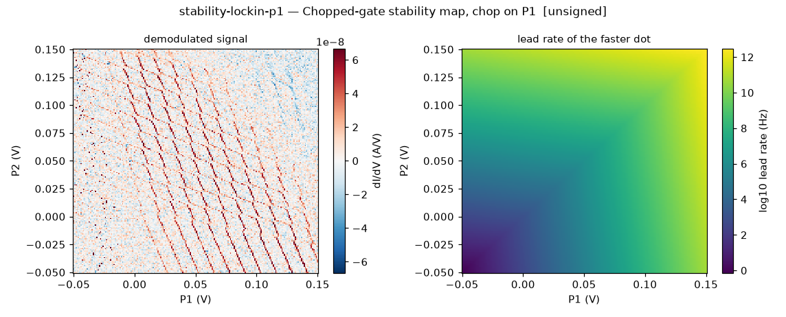
Must show:
stability-lockin-p2 — Chopped-gate stability map, chop on P2
As stability-lockin-p1 with the 1 mV square wave on P2. Dot-2 lines respond strongly, dot-1 lines only through cross-capacitance; the same lead-rate landscape gives latching in the low-voltage corner and broadening in the high-voltage corner. Default noise draw.
layers: charge, readout · step 1 · sign-off: unsigned · sha256 8825cd92025a48ef…

Must show:
stability-vs-sweep-rate — Coarse stability map at three dwell times
The layout-derived coarse map scanned with 1 ms, 10 microseconds and 100 nanoseconds per point, with the lead rates to the reservoirs taken from the WKB barriers of the landscape at the operating point and a master equation over the charge states. At the long dwell the map is the equilibrium honeycomb; as the dwell falls below one over the lead rate the charge lags behind the plunger, lines fade and shift along the fast axis (P2), and at the shortest dwell the charge is frozen. Noise-free; the lead rate used is recorded in the arrays.
layers: layout, electrostatics, charge, readout · step 4 · sign-off: unsigned · sha256 9bb3080388428f80…
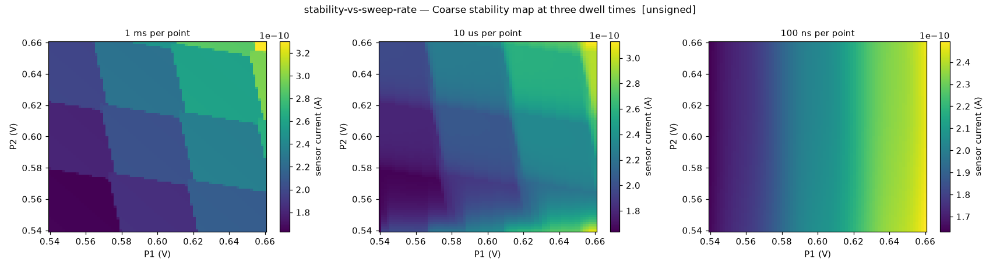
Must show:
switcher-histogram — Dwell-time statistics of the dominant two-level fluctuator
A 600 s sensor trace at the flank on a device whose noise is a per-device draw (1/f amplitude, a Poisson number of dominant switchers with amplitudes and rates drawn, white floor; catalog placeholders), and the dwell-time histograms of its largest switcher in each level on logarithmic bins. The dwell times are exponentially distributed with the drawn up and down rates, which are recorded in the arrays with the measured mean dwell times. First 20 s of the trace shown.
layers: disorder, readout · step 4 · sign-off: unsigned · sha256 53ba4b5327c012fb…
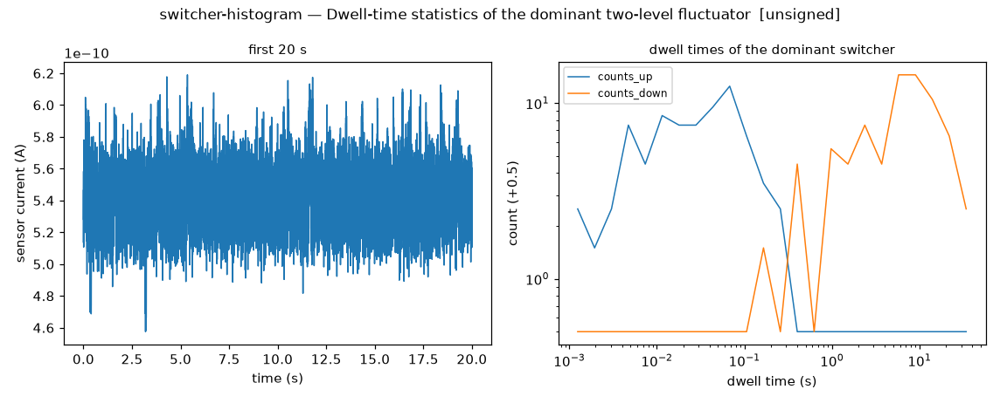
Must show:
t1-hot-spot — Spin relaxation time against field with the spin-valley hot spot, three valley draws
The spin relaxation time T1 against magnetic field for three dots drawn from the Si/SiGe valley distribution. Where the Zeeman energy equals a dot's valley splitting the spin and valley states mix and relaxation speeds up by orders of magnitude, a Lorentzian dip whose position moves with the draw. The background rate is a constant placeholder until the spin layer supplies its field dependence (ADR 0020).
layers: valley · step 5 · sign-off: unsigned · sha256 9d1aa83fcea0b896…

Must show:
turn-on-global — Channel turn-on with all gates raised together
Current through the channel of the textbook layout as every gate is swept together. The channel opens when the highest point of the electron energy along it, derived from the layout's potential, falls below the threshold; the turn-on voltage therefore follows from the lever arms. The step shape is phenomenological (calibration none). The second panel shows the derived channel barrier energy.
layers: layout, electrostatics, readout · step 2 · sign-off: unsigned · sha256 fb763a931ad1a729…

Must show:
turn-on-single-gate-layout — Channel turn-on under one gate, from the layout
The Step 1 protocol turn-on-single-gate re-rendered from the layout rather than a typed shape. B_L is swept with every other gate at 1.0 V so the rest of the channel is fully open; the channel opens when the energy under B_L, the highest point along the channel, falls below the threshold. The threshold voltage and the slope come from the lever arms; the step shape is phenomenological (calibration none).
layers: layout, electrostatics, readout · step 2 · sign-off: unsigned · sha256 f546ed4aa702b03d…

Must show:
turn-on-single-gate — Channel turn-on under one gate
Current through a channel as one accumulation gate is raised, all others fixed. A phenomenological shape in Step 1 (calibration none); Step 2 derives it from the layout potential.
layers: readout · step 1 · sign-off: unsigned · sha256 b9e5a1e942929bf0…
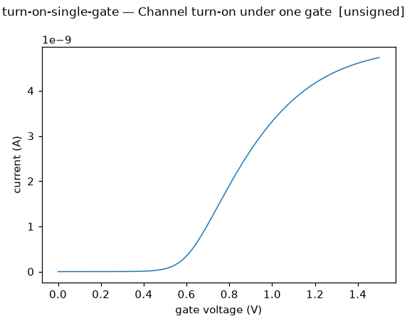
Must show:
unintentional-dots — Unintentional dots against interface-charge density
The mean number of extra minima of the electron energy inside the channel region, beyond the two intended dots, over 25 seeded draws of the textbook layout in the Si MOS material class (charges in the electron plane itself), against the charge-density severity (1 is the catalog draft's MOS placeholder, 3e10 per square centimetre). For Si/SiGe at its placeholder density the charges sit 44 nm above the electron plane and no extra minimum appears below a hundred times the density. Also the 90th percentile and the fraction of draws with at least one extra minimum. The Step 3 P1 row compares this with a published MOS versus SiGe comparison once its reference entry exists.
layers: layout, electrostatics, disorder · step 3 · sign-off: unsigned · sha256 a8c8b1ad08da7f68…

Must show:
valley-splitting-draws — Valley-splitting distribution across dots for Si/SiGe and Si MOS
Histograms of the valley splitting over 4000 dots of 10 nm radius drawn from the Rice distribution of alloy disorder (Si/SiGe, small deterministic part) and from the field-dominated MOS distribution, the fraction of dots below a 50 microelectronvolt threshold, and the Si/SiGe mean against dot radius with the 1/radius law overlaid; the mean departs from that law at large radius, where the deterministic part of the coupling floors it. Reference values are placeholders until the valley reference entries are confirmed (ADR 0020).
layers: valley · step 5 · sign-off: unsigned · sha256 fa71b9dee7394d70…
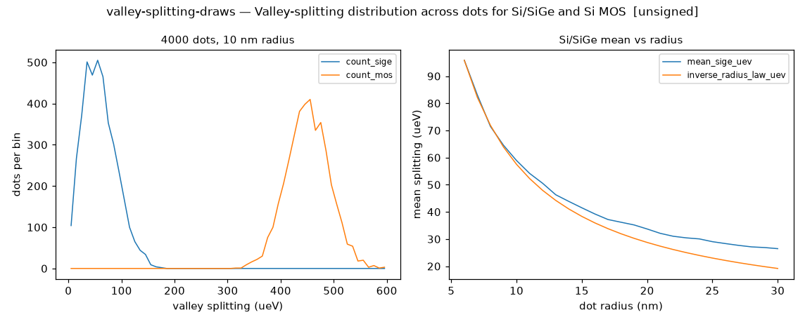
Must show:
virtual-gates-map — Coarse stability map in raw and in virtual plunger coordinates
The compiled device's coarse map against the raw plungers, where the honeycomb lines tilt because each plunger also shifts the other dot, and against the virtual plungers of the optimum's virtual-gate matrix, the inverse of the plunger block of the lever-arm matrix scaled to the raw plungers' lever arms, with the other gates' cross-talk compensated and the sensor gate moved to hold the sensor potential fixed, where each virtual plunger shifts one dot alone, the lines of that dot come out perpendicular to its axis, and the sensor background is flat apart from the charge steps (ADR 0023).
layers: charge, readout, device, optimum, compile · step 7 · sign-off: unsigned · sha256 ce54c99b439ef1e9…
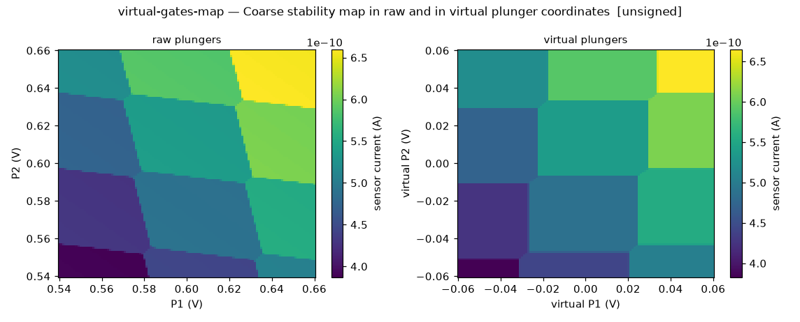
Must show: